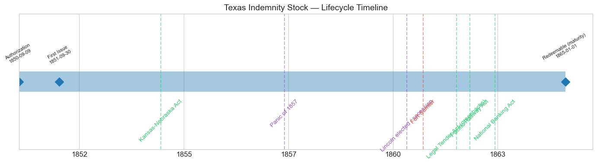
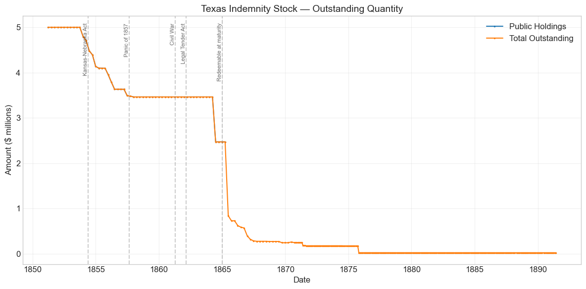
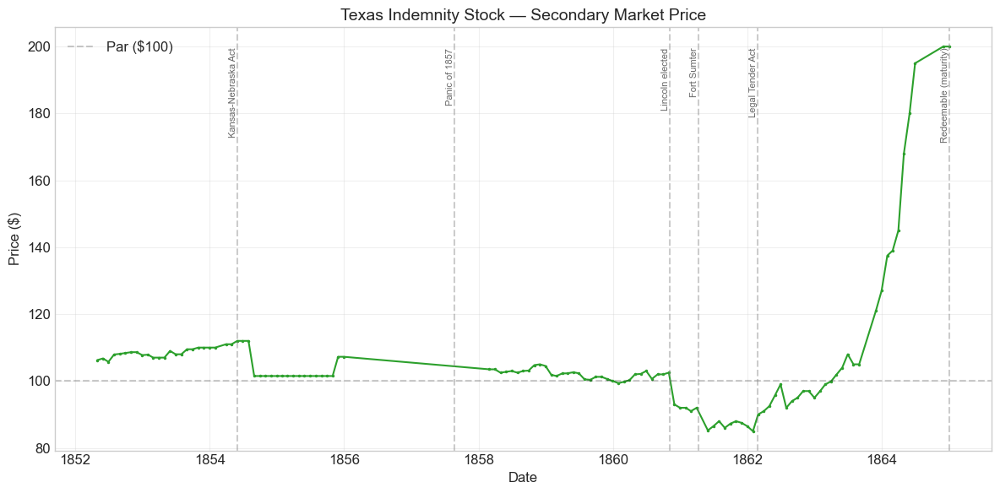
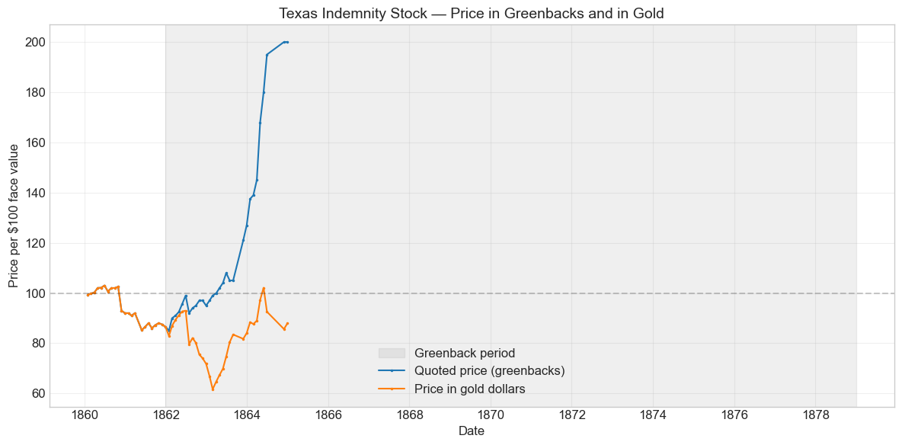
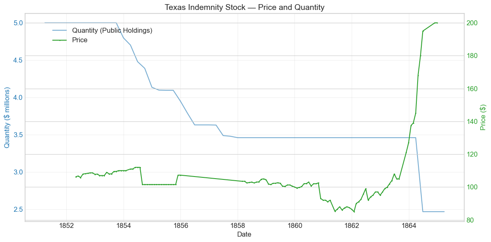
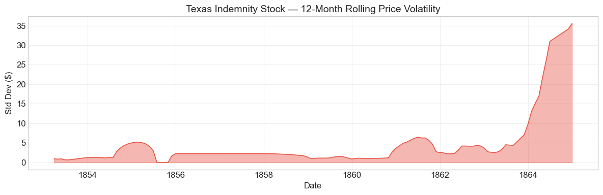

Bond Biography: Texas Indemnity Stock#
The Bond That Bought a Boundary#
An enhanced chapter from the Hall-Payne-Sargent US Federal Bond Database (2,857 issues, 1776–1960)
Bond ID (L1): 20093 | Category: Interest Bearing > Marketable > Long Term Bond
Data note. Quotations from January 1862 to the end of the series (December 1864) are prices in greenbacks, while this stock’s coupons and principal were payable in coin. Wartime price movements therefore mix the gold premium with credit news. The prints near 200 in late 1864 measure the gold premium on a coin claim about to mature.
import pandas as pd
import numpy as np
import matplotlib.pyplot as plt
import matplotlib.patches as mpatches
import datetime
import warnings
warnings.filterwarnings('ignore')
plt.style.use('seaborn-v0_8-whitegrid')
plt.rcParams.update({'figure.figsize': (12, 6), 'font.size': 12,
'axes.titlesize': 14, 'axes.labelsize': 12})
# Load the bond database
store = pd.HDFStore('../data/BondDF.h5', mode='r')
BondList = store['BondList']
BondQuant = store['BondQuant']
BondPrice = store['BondPrice']
store.close()
BondQuant_T = BondQuant.transpose()
BondPrice_T = BondPrice.transpose()
bond_id = 20093
print(f'Loaded data for: Texas Indemnity Stock (ID: 20093)')
/Users/thomassargent/anaconda3/lib/python3.9/site-packages/pandas/core/arrays/masked.py:60: UserWarning: Pandas requires version '1.3.6' or newer of 'bottleneck' (version '1.3.5' currently installed).
from pandas.core import (
Loaded data for: Texas Indemnity Stock (ID: 20093)
Overview#
The Texas Indemnity Stock was authorized by the Act of September 9, 1850, first issued on September 30, 1851, and carried a 5.0% coupon payable semi-annually in coin. It was a fourteen-year stock, redeemable after January 1, 1865. During its lifetime on the secondary market, the bond’s average price was $106.29, ranging from $85.00 to $200.00 (based on 120 monthly observations from April 1852 to December 1864). Peak outstanding reached $5.00 million in 1851.
Behind those statistics lies a bond unlike almost any other in the database — a security that was never sold at all. The United States did not borrow this money. It issued the Texas Indemnity Stock as payment: the purchase price of a boundary, and of a decade’s postponement of civil war.
In 1850 the Union nearly came apart. California, flooded with gold-rush migrants, applied for admission as a free state; the territories seized from Mexico had no governments; the South saw the sectional balance in the Senate about to tip forever. And entangled in all of it was Texas. The state claimed the Rio Grande to its source as her western boundary — a claim that swept in Santa Fe and the eastern half of what is now New Mexico, territory the federal army actually administered and whose inhabitants wanted no part of Texas. In the summer of 1850 Texas threatened to assert her authority in Santa Fe by force; federal troops stood in the way; and sober observers on both sides talked openly of the first shots of a sectional war being fired on the Rio Grande, ten years early.
The escape was engineered by the last great generation of compromisers. Henry Clay’s “omnibus” bill failed in July 1850, but Stephen A. Douglas broke it into separate measures that passed one by one, and the new president, Millard Fillmore — who had made clear he would enforce federal authority in New Mexico while pressing Congress for a settlement — signed them. The Texas piece, drafted by Senator James A. Pearce of Maryland, was signed on September 9, 1850: Texas relinquished her claims to territory beyond her present boundaries, and in return the United States agreed to pay the state $10 million in 5% stock. Texas’s legislature accepted the bargain that November. The bond in this chapter is that payment — a financial artifact of the Compromise of 1850 itself.
The Settlement: A Boundary, a Debt, and Half a Bond#
The Act of September 9, 1850 (9 Stat. 446) was a package with three interlocking parts:
1. The Boundary. Texas gave up her claims to New Mexico east of the Rio Grande — roughly the northwestern third of the territory she asserted — in exchange for her modern borders. New Mexico was simultaneously organized as a territory.
2. The Stock. As consideration, the United States agreed to issue to Texas $10 million of 5% stock, interest payable half-yearly, principal redeemable at the end of fourteen years. This was payment, not borrowing — there was no subscription, no loan contract, no sale by the Treasury. The certificates were simply created and made over to the State of Texas.
3. The Creditors’ Reserve. Half of the stock — $5 million — was to be retained by the United States until Texas’s creditors were provided for. The reason reached back to the Republic of Texas (1836–1845), which had borrowed heavily and pledged its customs revenues to service the debt. When Texas joined the Union in 1845, the United States took over her customs houses — and with them, arguably, the security behind those pledges. The act therefore required that holders of the revenue-secured debt file releases of all claims against the United States before the reserved half could be paid over.
The old Texas debt was a speculators’ market: much of it had changed hands at deep discounts, and its holders lobbied Congress persistently — historians of the Compromise have long noted the Texas bondholders among the interests pressing for a settlement in 1850. Untangling who was owed what took years. In the end, Congress cut the knot with the Act of February 28, 1855, which appropriated $7.75 million to be paid in cash, pro rata, directly to the creditors in exchange for their releases. The reserved $5 million of stock was thus never issued in that form.
That legislative history is written plainly in the database: peak outstanding is $5.00 million — exactly the first half of the authorized $10 million. Only the unreserved moiety, delivered to Texas, ever existed as marketable stock.
The closest cousin in this database is the Louisiana Six Per Cent. Stock of 1803 (Bond ID 20044), the bond with which Jefferson’s government paid Napoleon for Louisiana. Both securities were born as purchase money for territory rather than as loans; both put freshly created federal paper into the hands of a seller who turned it into cash. The differences are equally telling. The Louisiana stock went to a foreign power and was distributed through the great houses of Baring and Hope across Europe’s capital markets. The Texas stock went to an American state and dribbled into the market as the Texas treasury paid its own creditors and expenses — no syndicate, no underwriters, no foreign listing. A half-century after Louisiana, the United States could pay for an empire’s worth of political settlement entirely within its own borders. A similar instrument sits between them: the Mexican Indemnity Stock of 1847 (5%, Bond ID 20087), issued to cover installments owed to Mexico. Paying with debt had become a settled tool of American statecraft.
Historical Context#
The following major events occurred during (or just after) this bond’s lifetime:
Date |
Event |
Category |
|---|---|---|
1850-09 |
Compromise of 1850 enacted |
Legislation |
1854-05-30 |
Kansas-Nebraska Act |
Legislation |
1857-08-24 to 1858-12-31 |
Panic of 1857 |
Crisis |
1860-11-06 |
Lincoln elected; secession crisis begins |
Crisis |
1861-04-12 to 1865-04-09 |
Civil War |
War |
1861-04-12 |
Fort Sumter attacked |
Other |
1862-02-25 |
Legal Tender Act (greenbacks) |
Legislation |
1862-07-01 |
Pacific Railway Act |
Legislation |
1863-02-25 |
National Banking Act |
Legislation |
1863-07-01 to 1863-07-03 |
Battle of Gettysburg |
Other |
1864-06-03 |
National Banking Act (revised) |
Legislation |
1865-01-01 |
Stock redeemable at maturity |
Redemption |
1865-04-14 |
Lincoln assassinated |
Other |
The bond’s life is almost perfectly coextensive with the sectional crisis it was created to defuse. Issued in 1851 as the ink of the Compromise dried, it matured on January 1, 1865, as Sherman prepared to march north from Savannah. Its price record is therefore a monthly referendum, by holders of federal promises, on whether the Union would hold — and, after 1862, on what the Union’s money was worth. (Later events sometimes attached to this bond’s record — the Public Credit Act of 1869, Black Friday — belong to the small unredeemed residue that lingered on the Treasury’s books after maturity, not to the bond’s market life, and left no trace in its prices, which end in December 1864.)
The complacent early 1850s. From 1852 through mid-1854 the stock stood at a fat premium, 106 to 112. Federal finances were in surplus, gold poured in from California, and the Compromise appeared — for a while — to have worked. A 5% coin bond of the government that had never missed a payment was a coveted asset, and the Treasury itself competed with private buyers, using surplus revenue to buy in its own stock at premium prices.
The Panic of 1857 — a gap in the record. Strikingly, the database contains no quotations for this bond from the end of 1855 until February 1858: the panic year itself is a blank. The float had been shrunk by Treasury purchases, much of the remainder had settled into strong hands and trust portfolios, and quotations simply lapsed. When prices resume in early 1858 the stock stands at 102–105 — modestly below its mid-1850s premium but comfortably above par. Whatever the panic did to this bond happened off-stage; the record shows only that federal credit emerged intact while banks and railroads failed around it.
Secession and war. The election of November 1860 is written in the series as a nine-point plunge. As the cotton states left the Union, revenue collapsed and the Treasury of the outgoing administration could scarcely borrow at any price; the Texas stock — a coin obligation of a government whose survival was suddenly in question — sank into the 80s, touching its low of $85 in January 1862.
Greenbacks. After February 1862 the quotations mean something different. The Legal Tender Act made United States notes lawful money, and market prices thereafter are in depreciating paper. The bond’s climb from 85 to 200 between early 1862 and late 1864 is mostly not a recovery of credit but a collapse of the yardstick — with one twist that makes the series precious: as a coin obligation maturing in January 1865, the stock came to trade almost as bullion, its currency price tracking the gold premium.
# Bond Lifecycle Timeline
fig, ax = plt.subplots(figsize=(14, 4))
# Key dates
dates = [('Authorization', '1850-09-09'), ('First Issue', '1851-09-30'), ('Redeemable (maturity)', '1865-01-01')]
events = [('Kansas-Nebraska Act', '1854-05-30', 'legislation'), ('Panic of 1857', '1857-08-24', 'crisis'), ('Lincoln elected / secession', '1860-11-06', 'crisis'), ('Fort Sumter', '1861-04-12', 'war'), ('Legal Tender Act (greenbacks)', '1862-02-25', 'legislation'), ('Pacific Railway Act', '1862-07-01', 'legislation'), ('National Banking Act', '1863-02-25', 'legislation')]
import matplotlib.dates as mdates
from datetime import datetime
# Plot bond lifetime bar
d0 = datetime.strptime(dates[0][1], '%Y-%m-%d')
d1 = datetime.strptime(dates[-1][1], '%Y-%m-%d')
ax.barh(0, (d1 - d0).days, left=mdates.date2num(d0), height=0.3,
color='#1f77b4', alpha=0.4, label='Bond Lifetime')
# Mark key dates
for label, date_str in dates:
d = datetime.strptime(date_str, '%Y-%m-%d')
ax.plot(mdates.date2num(d), 0, 'D', color='#1f77b4', markersize=10)
ax.annotate(f'{label}\n{date_str}', (mdates.date2num(d), 0.25),
ha='center', va='bottom', fontsize=8, rotation=30)
# Mark historical events
colors = {'war': '#e74c3c', 'crisis': '#9b59b6', 'legislation': '#2ecc71', 'other': '#95a5a6', 'monetary': '#f39c12'}
for name, date_str, cat in events:
d = datetime.strptime(date_str, '%Y-%m-%d')
ax.axvline(mdates.date2num(d), color=colors.get(cat, 'gray'), alpha=0.5, linestyle='--')
ax.annotate(name, (mdates.date2num(d), -0.25), ha='center', va='top',
fontsize=10, rotation=45, color=colors.get(cat, 'gray'))
ax.set_yticks([])
ax.xaxis.set_major_formatter(mdates.DateFormatter('%Y'))
ax.set_title('Texas Indemnity Stock — Lifecycle Timeline')
ax.set_ylim(-1, 1)
plt.tight_layout()
plt.show()

Bond Features#
Feature |
Detail |
|---|---|
Name |
Texas Indemnity Stock |
Authorizing Act |
September 9, 1850 (9 Stat. 446) |
First Issue Date |
September 30, 1851 |
Term |
14 years |
Redeemable After |
January 1, 1865 |
Coupon Rate |
5.0% |
Payment Frequency |
Semi-annual (January and July) |
Callable |
No |
Payable in Coin |
Yes |
Authorized Amount |
$10 million (of which $5 million issued as stock) |
Issued To |
The State of Texas, as payment — not sold by subscription |
Two features deserve emphasis. First, the 5% coupon was below the 6% the Treasury had paid on its Mexican War loans of 1847–48 — a mark of how cheap federal credit had become by 1850, and a rate the market promptly validated by bidding the stock well above par. Second, the stock was not callable: once the certificates left the Texas treasury, holders owned an unconditional fourteen-year claim on semi-annual coin interest, with the principal falling due on January 1, 1865 — a date that, unimaginably in 1850, would arrive in the middle of a civil war.
# Display full bond features from database
row = BondList.loc[20093]
display_cols = [
"Treasury's Name Of Issue", 'Authorizing Act', 'Term Of Loan',
'First Issue Date', 'First Redemption Date', 'Final Redemption Date',
'Coupon Rate', 'Coupons Per Year', 'Callable', 'Coin',
'Authorized Amount', 'Price Sold'
]
print('Bond Features from Database:')
print('=' * 55)
for col in display_cols:
if col in row.index:
print(f' {col:<30} {row[col]}')
Bond Features from Database:
=======================================================
Treasury's Name Of Issue Texas Indemnity Stock
Authorizing Act September 9, 1850
Term Of Loan 14 years
First Issue Date 1851-09-30 00:00:00
First Redemption Date NaT
Final Redemption Date NaT
Coupon Rate 5.0
Coupons Per Year 2.0
Callable 0.0
Coin 1.0
Authorized Amount nan
Price Sold 1.0
Bond Quantity Over Time#
The bond’s outstanding quantity peaked at $5.00 million — the full unreserved half of the authorization — and the public-holdings series spans 1851 to early 1865. The Total Outstanding series continues long past maturity, recording the slow presentation of matured certificates: the last database observation, in May 1891, still shows $20,000 of Texas Indemnity Stock on the Treasury’s books, more than a quarter-century after it stopped earning interest.
# Bond quantity over time
fig, ax = plt.subplots(figsize=(12, 6))
for stype in ['Public Holdings', 'Total Outstanding']:
try:
s = BondQuant_T.loc[(20093, stype)]
s = s[s.notna()]
if len(s) > 0:
ax.plot(s.index, s.values / 1e6, marker='.', markersize=3, linewidth=1.5, label=stype)
except KeyError:
pass
ax.set_title('Texas Indemnity Stock — Outstanding Quantity')
ax.set_xlabel('Date')
ax.set_ylabel('Amount ($ millions)')
ax.legend()
ax.grid(True, alpha=0.3)
events = {'1854-05-30': 'Kansas-Nebraska Act', '1857-08-24': 'Panic of 1857', '1861-04-12': 'Civil War', '1862-02-25': 'Legal Tender Act', '1865-01-01': 'Redeemable at maturity'}
for date_str, label in events.items():
d = pd.Timestamp(date_str)
ax.axvline(d, color='gray', alpha=0.4, linestyle='--')
ax.text(d, ax.get_ylim()[1]*0.97, label, rotation=90, va='top', ha='right', fontsize=8, alpha=0.7)
plt.tight_layout()
plt.show()

Quantity Analysis#
The quantity series tells the story of the stock in four movements.
Full issuance (1851). Unlike a subscription loan, which fills gradually as investors pay in, the Texas stock appears essentially all at once: the $5 million unreserved half was created and made over to the State of Texas, and it enters the ledger at its full amount. There was nothing to “place” — the placing was done by an act of Congress.
The surplus-era rundown (1853–1857). From late 1853 the outstanding amount declines steadily — $4.80 million at the end of 1853, $4.14 million a year later, $3.46 million by the end of 1857. This was the flush Treasury of the 1850s at work. With customs revenue swollen by California gold and booming trade, Secretaries Guthrie and Cobb used the surplus to buy in the public debt at premium prices, and the Texas Indemnity Stock — one of the few marketable federal issues then outstanding — was steadily absorbed. About $1.5 million, nearly a third of the issue, was retired this way before the Panic of 1857 ended the surpluses.
The frozen plateau (1858–1864). The rundown then stops almost exactly where the panic found it. Deficits returned in 1858, secession destroyed the revenue, and a Treasury that was borrowing desperately had no business buying in 5% stock. Roughly $3.46 million sat outstanding through the entire secession crisis and most of the war, with a further reduction to about $2.47 million recorded in mid-1864 as scattered holdings were retired or absorbed into government accounts in the run-up to maturity.
Maturity and the long tail (1865–1891). The stock became redeemable on January 1, 1865, and the Total Outstanding series drops in steps — to about $837,000 by mid-1865, under $400,000 by the end of 1866 — as holders presented their certificates. But the tail is remarkably long: $174,000 was still out in 1872 and $20,000 in 1891, at the last database observation. Matured, non-interest-bearing federal stock could sit for decades in strongboxes, estates, and forgotten trust portfolios before someone carried it to the Treasury.
Secondary Market Prices#
Overall Statistics (1852-04-30 to 1864-12-31): Mean $106.29, Range $85.00–$200.00, Std Dev $19.76, 120 observations.
By Period:
Period |
Approx. Range |
Character |
|---|---|---|
1852–1854 (to July) |
106 → 112 |
Compromise complacency; surplus-era premium |
1854 (Aug)–1855 |
101½–107¼ |
Step down; long runs of identical, thin quotations |
1856–1857 |
no quotations |
Float shrunk by Treasury purchases; the Panic of 1857 falls in the gap |
1858–1860 (Oct) |
99⅜–105 |
Post-panic; drifting toward par as maturity nears |
1860 (Nov)–1862 (Jan) |
85–93 |
Secession crisis and first war year; credit low of $85 |
1862–1864 |
90 → 200 |
Greenback era; currency price rises toward the gold value of a maturing coin claim |
Read as a single arc, the series is one of the cleanest financial chronicles of the sectional decade in the database: premium and complacency after the Compromise, erosion and silence through the turbulent mid-1850s, a plunge when the election of 1860 put the Union itself in doubt, and finally a doubling in paper terms that measured not the bond’s recovery but the dollar’s decline.
# Annotated price chart
fig, ax = plt.subplots(figsize=(12, 6))
s = BondPrice_T.loc[(20093, 'Average')]
s = pd.to_numeric(s, errors='coerce').dropna()
if len(s) > 0:
ax.plot(s.index, s.values, marker='.', markersize=3, linewidth=1.5, color='#2ca02c')
ax.axhline(100, color='black', alpha=0.2, linestyle='--', label='Par ($100)')
ax.set_title('Texas Indemnity Stock — Secondary Market Price')
ax.set_xlabel('Date')
ax.set_ylabel('Price ($)')
ax.legend()
ax.grid(True, alpha=0.3)
events = {'1854-05-30': 'Kansas-Nebraska Act', '1857-08-24': 'Panic of 1857',
'1860-11-06': 'Lincoln elected', '1861-04-12': 'Fort Sumter',
'1862-02-25': 'Legal Tender Act', '1865-01-01': 'Redeemable (maturity)'}
for date_str, label in events.items():
d = pd.Timestamp(date_str)
ax.axvline(d, color='gray', alpha=0.4, linestyle='--')
ax.text(d, ax.get_ylim()[1]*0.97, label, rotation=90, va='top', ha='right', fontsize=8, alpha=0.7)
plt.tight_layout()
plt.show()

Prices in greenbacks and in gold#
From January 1862 to December 1878 the database quotes this bond in greenbacks, while its coupons were paid in coin. A greenback price therefore moves with the gold premium as well as with the bond’s credit. The chart below divides each greenback price by the greenback price of $100 in gold, which restates the quotation in gold dollars. Before 1862 and after 1878 the two units coincide.
# Price in greenbacks and in gold units, 1860-1880
gold = pd.read_csv('../data/gold_price_greenbacks_1862_1878.csv', comment='#', parse_dates=['date']).set_index('date')['gold_price_greenbacks']
p = pd.to_numeric(BondPrice_T.loc[(20093, 'Average')], errors='coerce').dropna()
p = p.loc['1860-01-01':'1880-12-31']
g = gold.reindex(p.index)
g[(p.index < pd.Timestamp('1862-01-01')) | (p.index > pd.Timestamp('1878-12-31'))] = 100.0
p_gold = p / (g / 100.0)
fig, ax = plt.subplots(figsize=(12, 6))
ax.axvspan(pd.Timestamp('1862-01-01'), pd.Timestamp('1878-12-31'), color='gray', alpha=0.12, label='Greenback period')
ax.plot(p.index, p.values, marker='.', markersize=3, linewidth=1.5, label='Quoted price (greenbacks)')
ax.plot(p_gold.index, p_gold.values, marker='.', markersize=3, linewidth=1.5, label='Price in gold dollars')
ax.axhline(100, color='black', alpha=0.2, linestyle='--')
ax.set_title('Texas Indemnity Stock — Price in Greenbacks and in Gold')
ax.set_xlabel('Date')
ax.set_ylabel('Price per \\$100 face value')
ax.legend()
ax.grid(True, alpha=0.3)
plt.tight_layout()
plt.show()

# Price and Quantity — dual-axis chart
fig, ax1 = plt.subplots(figsize=(12, 6))
# Quantity (left axis)
for stype in ['Public Holdings', 'Total Outstanding']:
try:
q = BondQuant_T.loc[(20093, stype)]
q = q[q.notna()]
if len(q) > 0:
ax1.plot(q.index, q.values / 1e6, color='#1f77b4', alpha=0.6, label=f'Quantity ({stype})')
break
except KeyError:
pass
ax1.set_xlabel('Date')
ax1.set_ylabel('Quantity ($ millions)', color='#1f77b4')
ax1.tick_params(axis='y', labelcolor='#1f77b4')
# Price (right axis)
ax2 = ax1.twinx()
p = BondPrice_T.loc[(20093, 'Average')]
p = pd.to_numeric(p, errors='coerce').dropna()
if len(p) > 0:
ax2.plot(p.index, p.values, color='#2ca02c', marker='.', markersize=2, label='Price')
ax2.set_ylabel('Price ($)', color='#2ca02c')
ax2.tick_params(axis='y', labelcolor='#2ca02c')
ax1.set_title('Texas Indemnity Stock — Price and Quantity')
ax1.grid(True, alpha=0.3)
fig.legend(loc='upper left', bbox_to_anchor=(0.1, 0.9))
plt.tight_layout()
plt.show()

Detected Price/Quantity Events#
The following significant movements were auto-detected in the data, with causal interpretation:
Date |
Type |
Change |
Interpretation |
|---|---|---|---|
1854-08 |
price drop |
-9.4% |
The step from 112 to 101½ coincides with the unsettled summer after the Kansas-Nebraska Act and a tightening money market, but the fifteen consecutive months of identical 101½ quotations that follow counsel caution: this is a thin, largely nominal market — the drop likely mixes genuine repricing with a change in the basis or source of quotation. |
1855-11 |
price spike |
+5.7% |
The mirror image — quotations come back to life at 107¼ after the long 101½ plateau. In so thin a market, single transactions moved the printed price. |
1860-11 |
price drop |
-9.3% |
Lincoln’s election (November 6) and the start of the secession movement. Federal credit sank across the board as the revenue system and the Union itself came into question; this coin bond fell from 102½ to 93 in a month. |
1861-05 |
price drop |
-7.3% |
The first weeks of actual war after Fort Sumter. With the Treasury borrowing at ruinous rates and the war’s scale unknown, the stock touched 85¼ — near its all-time low. |
1862-02 |
price spike |
+5.9% |
The Legal Tender Act (February 25) and the first great Union victories in the West (Forts Henry and Donelson) arrived together. Prices henceforth are in greenbacks; the rise mixes relief with the first depreciation of the new currency. |
1862-07 |
price drop |
-7.1% |
Not the Pacific Railway Act — this is McClellan’s failure before Richmond. The Seven Days battles (late June–early July) extinguished hopes of a quick war and knocked federal securities down across the list. |
1863-11 |
price spike |
+15.2% |
(follows a data gap) Partly a gap artifact (no quotations for September–October 1863), the jump to 121 reflects the post-Gettysburg/Vicksburg turn and, above all, the swelling gold premium raising the paper price of a coin obligation. |
1864-01 |
price spike |
+8.3% |
Greenback depreciation, not credit news. Gold was climbing toward its wartime extremes, and the maturing coin claim climbed with it. |
1864-04 |
price spike |
+15.9% |
The same force accelerating: gold soared in the spring of 1864 as Grant’s costly overland campaign began. At 168 in currency, the bond was tracking bullion. |
1864-05 |
price spike |
+7.1% |
Continuation — 180 in May, 195 by June. With redemption months away, the stock had become, in effect, a dated claim on gold quoted in depreciated paper. |
The listed legislative “nearest events” for 1864 (the revised National Banking Act) are coincidences of the calendar. The dominant cause of every 1863–64 spike is monetary: the greenback price of gold, against which this coin-payable, soon-maturing bond was continuously arbitraged.
Price Volatility#
Maximum drawdown: -24.1% (from the peak of $112.00 on May 31, 1854 to the trough of $85.00 on January 31, 1862)
Average monthly return: 0.581%
Both statistics need translation. The drawdown took nearly eight years to unfold and is really two separate declines — the mid-1850s step down from the surplus-era premium, and the secession-crisis plunge of 1860–62 — separated by years of placid near-par quotations. And the handsome average monthly return is an illusion of the greenback era: most of it is the 1862–64 ascent from 85 to 200, which enriched holders in paper while the paper itself shrank. Measured in gold, the late-war “rally” largely disappears. The rolling-volatility chart below makes the same point: the quiet 1850s, a secession-era stir, and then an explosion of measured volatility after 1862 that belongs to the currency, not the credit.
# Rolling volatility (12-month window)
p = BondPrice_T.loc[(20093, 'Average')]
p = pd.to_numeric(p, errors='coerce').dropna()
if len(p) >= 12:
rolling_std = p.rolling(window=12).std().dropna()
fig, ax = plt.subplots(figsize=(12, 4))
ax.fill_between(rolling_std.index, rolling_std.values, alpha=0.4, color='#e74c3c')
ax.plot(rolling_std.index, rolling_std.values, color='#e74c3c', linewidth=1)
ax.set_title('Texas Indemnity Stock — 12-Month Rolling Price Volatility')
ax.set_xlabel('Date')
ax.set_ylabel('Std Dev ($)')
ax.grid(True, alpha=0.3)
plt.tight_layout()
plt.show()
else:
print('Insufficient data for rolling volatility (need >= 12 observations)')

Issuance, Distribution, and Redemption#
The database records the stock as “sold” at 1.0 — par — but the entry is really a placeholder for a stranger truth: this bond was never sold by the Treasury at all.
How it reached the market. The certificates were issued to the State of Texas as the purchase price of her relinquished claims. From the Texas treasury they radiated outward: the state applied the stock and its proceeds to the debts of the old Republic not covered by the federal creditor settlement, to public purposes (including, famously in Texas history, the endowment of the state’s schools), and to current expenses. Each certificate that Texas paid out or sold became, in someone’s portfolio, an ordinary marketable United States 5% — and by April 1852 the stock was being quoted on the New York market alongside the Mexican War loans. There was no underwriting syndicate, no subscription book, no foreign distribution: the “issuance” of this loan was a fiscal transfer between two American governments, monetized retail. In this it is the domestic descendant of the Louisiana Six Per Cent. Stock of 1803, which likewise began life not on a subscription ledger but in the hands of a seller — though where Napoleon’s bonds needed Baring and Hope to turn them into cash, Texas needed only the ordinary machinery of the American securities market.
Who held it. Direct evidence on holders is thin, and we keep to what the record supports: the price behavior — long runs of unchanged quotations, a vanishing float in the mid-1850s — is that of a security lodged with banks, trustees, endowments, and the Treasury’s own surplus-revenue purchases rather than active speculators. It was, for most of its life, an investment bond in the strictest sense.
Redemption in the greenback era. The principal fell due on January 1, 1865 — mid-war, three years into the paper-money regime. What did payment mean at such a moment? The stock’s interest had been, and the wartime Treasury’s bond interest generally was, a coin affair (the Legal Tender Act itself excepted interest on the public debt, payable in coin from customs revenue). The market’s verdict on the maturing principal is visible in the last quotations: 200 in currency in November and December 1864, within hailing distance of the contemporaneous gold premium. Holders and dealers, that is, valued the maturing stock at roughly the gold value of its par — treating redemption as worth about one hundred coin dollars, or their paper equivalent at the going rate, per certificate. We hedge on the precise till-side mechanics, which the database does not record; what the data show plainly is that the market priced this bond to the end as what its contract said it was: a coin claim, quoted in paper that had fallen to less than half its face in gold.
The long tail. Presentation was leisurely. Total outstanding fell to about $837,000 by mid-1865 and a few hundred thousand by 1867, then dwindled by inches: $174,000 in 1872, $20,000 still unredeemed at the series’ last observation in May 1891. A bond born of the Compromise of 1850 was still trickling into the Treasury when the veterans of the war it failed to prevent were old men.
Implications and Legacy#
The Texas Indemnity Stock is a small issue — $5 million, beside which the Civil War loans tower a hundredfold — but few bonds in the database carry more history per dollar.
It shows debt as an instrument of statecraft, not finance. Three times before the Civil War the United States created federal stock to pay for a political settlement rather than to borrow: Louisiana in 1803, the Mexican indemnity in 1847, and Texas in 1850. The Texas stock is the purest case — the consideration in a domestic treaty, exchanged for a boundary line and the standing-down of an armed confrontation between a state and the federal army. The $10 million was, quite literally, the price of postponing the Civil War; and the postponement — a decade in which the North’s population, railroads, and industry outgrew the South’s — arguably mattered as much as any campaign after 1861.
It embodies the entanglement of finance and sectional politics. The bond’s very structure — half delivered, half reserved against the claims of the old Republic’s creditors — was written by the lobbying of Texas bondholders, whose interest in a settlement historians of the Compromise have long recognized. Speculative holders of defaulted Texas paper thus became, improbably, a constituency for the Union’s preservation in 1850.
Its price series is the sectional crisis, priced monthly. Born at 106 in the after-glow of the Compromise, sagging through the Kansas-Nebraska years, silent through the Panic of 1857, crashing to 85 as the Union dissolved, and soaring to 200 in a currency the war had debased — the series records, better than most narratives, what the men with money at stake believed at each step. The secession-winter quotations are especially eloquent: the market marked down the promises of the federal government by fifteen percent on the mere election of Lincoln, before a single state had seceded.
It marks the boundary between two monetary worlds. The stock was promised in coin in 1850 and matured in 1865 into a world of legal-tender paper, national banks, and a gold market quoting the dollar at a discount. Its last two years of prices — a coin bond arbitraged against gold in greenback quotations — are a miniature of the valuation problems that dominate the rest of the database’s Civil War era, and that the Payne–Szőke–Hall–Sargent project was built to measure.
And one irony deserves the last word: the state whose payment this bond represents seceded from the government that was paying it. Texas left the Union in February 1861; the United States went on servicing, and in 1865 redeeming, the stock it had issued to buy peace with her. The creditor’s promise outlived the compromise that created it — which is, perhaps, the most concise statement of what United States credit meant.
References#
Primary and Documentary Sources#
U.S. Congress, An Act proposing to the State of Texas the Establishment of her Northern and Western Boundaries, the Relinquishment by the said State of all Territory claimed by her exterior to said Boundaries, and of all her Claims upon the United States, and to establish a territorial Government for New Mexico, September 9, 1850 (9 Stat. 446).
U.S. Congress, An Act to provide for the Payment of such Creditors of the late Republic of Texas as are comprehended in the Act of Congress of September nine, eighteen hundred and fifty, February 28, 1855 (10 Stat. 617).
Annual Reports of the Secretary of the Treasury, 1850–1866 (Corwin, Guthrie, Cobb, Thomas, Dix, Chase, Fessenden, McCulloch).
Bayley, R. A. (1881). The National Loans of the United States, From July 4, 1776 to June 30, 1880. Washington: Government Printing Office. (The standard loan-by-loan compendium; its account of the Texas Indemnity Stock underlies the terms cited here.)
Scholarly Works#
Payne, J., Szőke, B., Hall, G. & Sargent, T. (2025). “Costs of Financing US Federal Debt: 1791–1933.” Quarterly Journal of Economics. (Source of all price and quantity data in this chapter.)
Potter, D. M. (1976). The Impending Crisis, 1848–1861. New York: Harper & Row. (The standard narrative of the sectional decade, including the Compromise of 1850 and the Texas boundary crisis.)
Stegmaier, M. J. (1996). Texas, New Mexico, and the Compromise of 1850: Boundary Dispute and Sectional Crisis. Kent, OH: Kent State University Press. (The fullest modern account of the boundary settlement and the Pearce bill.)
General Histories#
Dewey, D. R. (1918). Financial History of the United States. New York: Longmans, Green and Co.
Studenski, P. & Krooss, H. E. (1952). Financial History of the United States. New York: McGraw-Hill.
Enhanced Bond Biography generated from the Hall-Payne-Sargent Bond Database. All prices and quantities are from the database; narrative context draws on Bayley (1881), Potter (1976), Stegmaier (1996), and the standard financial histories. Where the documentary record on holders and redemption mechanics is thin, the text says so and keeps to what the data support.